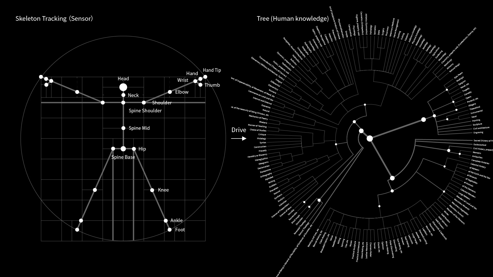
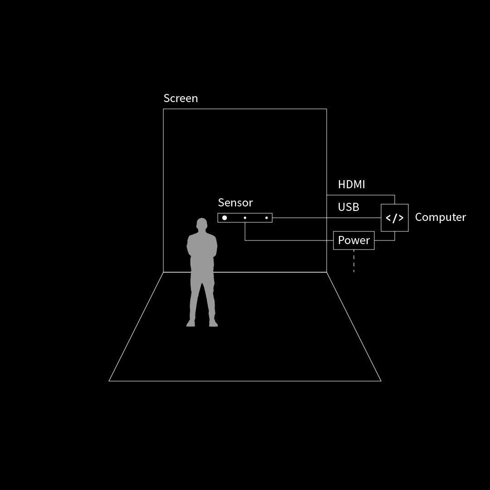
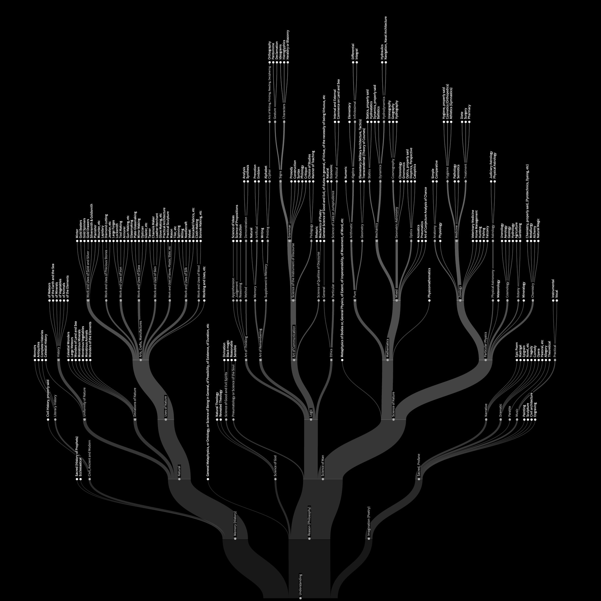

Tree
Interactive Installation, Real-Time, 2018-Present (2024 Version)
Tree is an interactive installation based on skeleton tracking. The program tracks the user's skeleton motion data in real time, abstracts the human skeleton structure into a tree data structure, and uses it as a core node to drive the form and motion of the tree structure of human knowledge, thereby generating a dynamic, abstract form of human knowledge tree.
Data source: Figurative system of human knowledge


